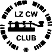

E-ADDRESS: lz2au (at) qsl . net
Antoaneta Encheva, LZ2AU
P.O.Box 189
Gorna Oryahovitza, 5100
BULGARIA
WWW: http://web.orbitel.bg/lzcwc/
http://www.geocities.com/lzcwclub/
Notera klubbens aktiviteter:
Rundabordet varje tisdag klockan 18.00Z på 3527 kHz,
nätkontrollstation är LZ9CWC,
som körs för LZCWCs syfte av LZ1AF.
Under rundabordet kan nomineringar om medlemsskap framföras och röstas om.En minitävling den sista tosdagen i månaden 18.00-19.00Z 3530-3570 kHz. LZCWC ger till medlemmar ut ett certifikat för enastående telegrafikörande. Nomineringar och röstningar sker vid rundaborden.